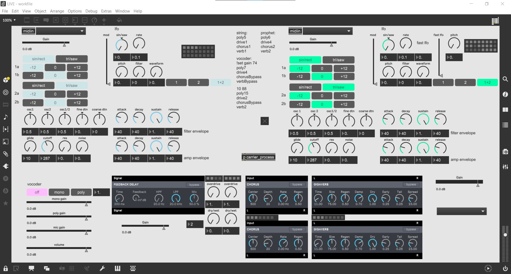

Based on the first phrase of Satie's Gymnopédie number 1, the Gymnopédie Generator has at its core a random bass
notes generator. From those notes the program determines the upper structure of the chord and plays it following
the original piece's comping pattern. At the same time it determines the notes to play on each chord and chooses
randomly the played note for each of the beats where the original melody would be, giving it its "broken
Gymnopédie" feel.
The user can switch between major and minor chords at will (the program adapts the melody notes accordingly),
and can create new melodic pattern using the sequencer-like interface of the melody customizer.
midify
Midify is a work in progress. At its base (current state) it takes a mono audio input and turns it into midi
notes that it sends in this case to the Novation MiniNova. Since the demo video it has a exact pitch
reproduction added, meaning it can reproduce bends and detunes from the input.
The next step will be, when I have enough time on my hands, to use the amplitude of the input signal and map it
to a relevant setting of the receiving synthesizer to add an organic feel to the resulting sound.
LIVE (poly & mono synth patch)

LIVE is my first finished performance patch. It comprises 2 instances of the same home made subtractive
synthesizer: monophonic in blue and polyphonic in green.
I also made the vocoder myself, with a switch to set which of the synthesizers is used as carrier, letting the
other one pass through to the effect chain.
The effect chain, except for the overdrive, is composed of BEAP modules included with Max. They are however
modified in order to accept storing and recalling presets.
This patch was created for the purpose of limiting the number of instrument to carry. For a band I still play
with in Switzerland, I needed a way to fit most of my synthesizers in my laptop not to have to carry every
hardware synth from the Netherlands. With this patch I can simply borrow a MIDI keyboard wherever I need to play
and I have all of my setup with me on my computer.